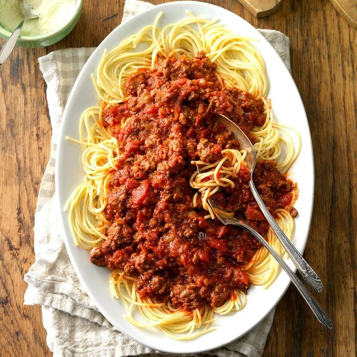

Spaghetti Recipe
Servings - 3
Calories - 450
Prep Time - 35 min

Ingredients
- 2 pounds ground beef
- 3/4 pound bulk Italian sausage
- 4 medium onions, finely chopped
- 8 garlic cloves, minced
- 4 cans (14-1/2 ounces each) diced tomatoes
- 4 cans (6 ounces each) tomato paste
- 1/2 cup water
- 1/4 cup sugar
- 1/4 cup Worcestershire sauce
- 1 tablespoon canola oil
Instructions
-
In a Dutch oven, cook the beef, sausage, onions and garlic over
medium heat until meat is no longer pink; drain.
-
Transfer to a 5-qt. slow cooker. Stir in the tomatoes, tomato paste,
water, sugar, Worcestershire sauce, oil and seasonings.
-
Cook, covered, on low 8-10 hours. Discard bay leaves. Serve with
spaghetti.